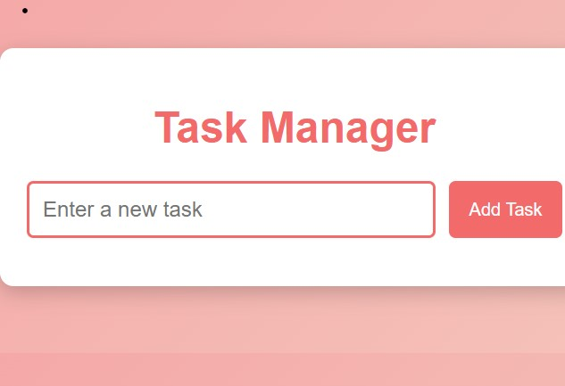

Sugunasree Badveli
Web Developer
I am an experienced web developer with over six years of expertise in HTML, CSS, ASP, .NET, JavaScript, SQL, and XML. Recently upskilled in Python, and modern web development technologies through Coursera. Previous roles include Programmer, Web Developer, and Programming Officer, where I managed all project stages, provided technical support, and developed web/database interactions. After a career break, I am eager to re-enter the workforce, combining my past experience with new skills to deliver efficient, user-friendly web solutions.
Portfolio
Skill Summary
HTML CSS JavaScript
Career Highlights
Green Lane Studios, East Maitland, Australia
Programmer
Manchester Unity, St Leonards, NSW Australia
Analyst / Programmer
TLRU, Illawarra Institute TAFE NSW, Australia
Web Developer
Open Training and Education Network-DE, NSW Australia,
Multimedia programming officer
Education
S.K. University, India
Bachelor Degree in Electronics & Communications Engineering
Contact
Email: suguna12@hotmail.com